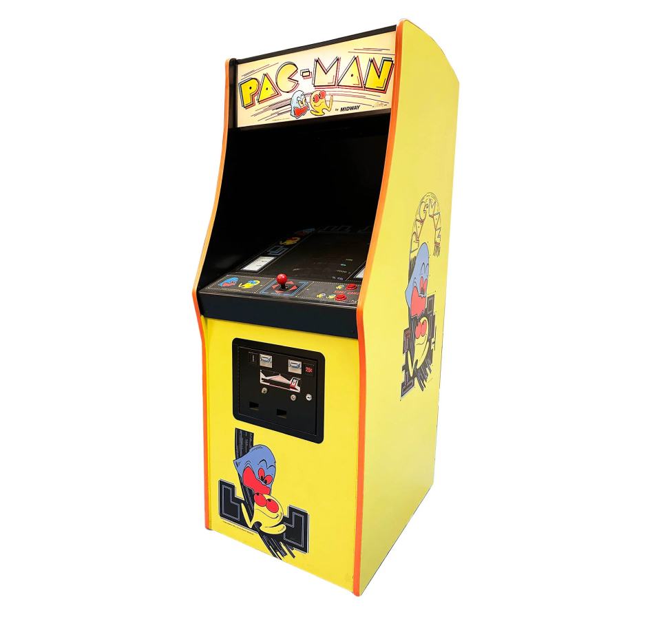

Pac-Man Arcade Game
Released in 1980 by Namco, Pac-Man became a cultural phenomenon, featuring the iconic yellow character navigating mazes, munching pellets, and avoiding colorful ghosts.
Released in 1980 by Namco, Pac-Man became a cultural phenomenon, featuring the iconic yellow character navigating mazes, munching pellets, and avoiding colorful ghosts.